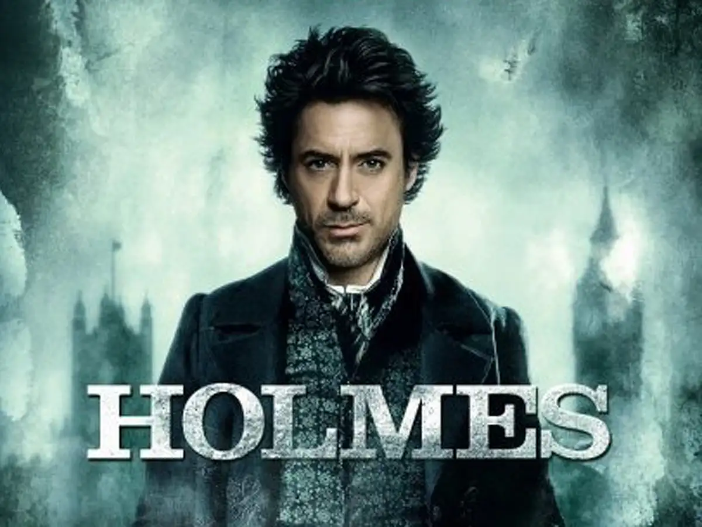
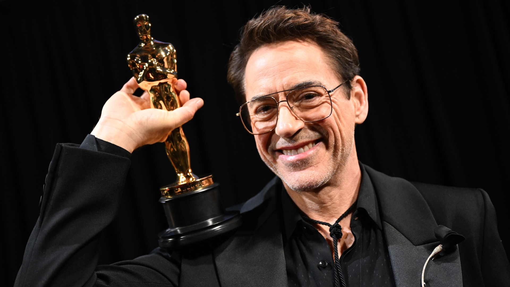
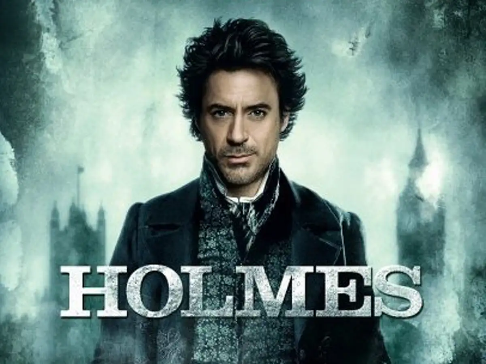
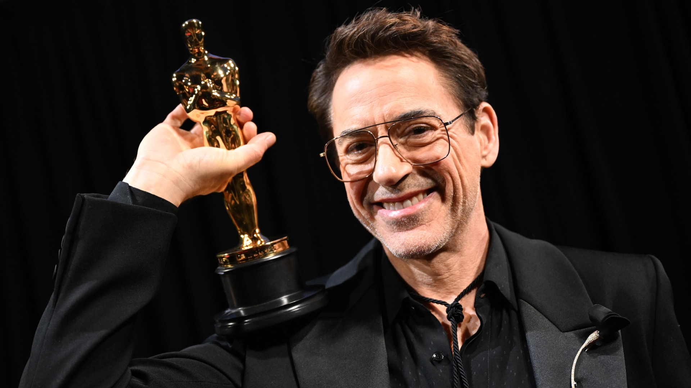

Early Life :
Robert John Downey Jr. was born on April 4, 1965, in Manhattan, New York City, as the younger of two children. His father, Robert Downey Sr., was a filmmaker with Lithuanian Jewish, Hungarian Jewish, and Irish roots, while his mother, Elsie Ann Ford, was an actress of Scottish, German, and Swiss descent who often appeared in Downey Sr.'s films. Due to his father's filmmaking career, Downey moved frequently during his childhood, living in places such as Woodstock, London, New Mexico, California, and Connecticut. The family's financial situation fluctuated between wealth and near-poverty depending on the success of his father's projects. Downey's upbringing was heavily influenced by substance abuse. He was surrounded by drugs from a young age, with his father introducing him to marijuana at just six years old and later giving him cocaine. Downey later reflected that drug use became a twisted form of bonding between him and his father, who expressed deep regret over his choices. His mother also struggled with alcoholism, creating a turbulent home environment. Downey began acting very early, appearing in his father's films with his debut role at the age of five in the absurdist comedy Pound (1970), followed by a role in Greaser's Palace (1972) at age seven. He attended the Stagedoor Manor performing arts camp in New York when he was eleven and twelve. In 1977, his parents divorced, and Downey moved in with his mother in New York City, while his sister stayed with their father in California. A few years later, he reunited with his father and attended Santa Monica High School but dropped out in 1982. At the age of 17, Downey returned to New York to pursue acting full-time. He took on various jobs to support himself, including waiting tables, working in a shoe store, and even performing as “living art” at a nightclub called Area. During this time, he secured small roles in theater and off-Broadway productions. His first credited film role came in the 1983 film Baby It's You, although his scenes were ultimately cut. Despite these early setbacks, Downey's determination laid the groundwork for what would become a remarkable, though turbulent, acting career.
Career Highlights
Downey's career began at the age of five when he appeared in his father's film "Pound" (1970). He gained significant recognition for his role as Tony Stark/Iron Man in the Marvel Cinematic Universe, starting with "Iron Man" (2008). Other notable films include "Sherlock Holmes" (2009), "Tropic Thunder" (2008), and "Avengers: Endgame" (2019).
Personal Life
Downey has been married twice: to Deborah Falconer (1992-2004) and to Susan Downey (2005-present). He has three children. Known for his struggles with substance abuse, Downey has been sober since 2003 and has credited his family and various support systems for his recovery.
1996-2001: Addiction-related setbacks and Ally McBeal
 Between 1996 and 2001, Robert Downey Jr. faced a series of addiction-related
legal and personal setbacks that
severely impacted his life and career. He was arrested multiple times on charges related to possession of drugs,
including cocaine, heroin, and marijuana. Despite going through various drug treatment programs, he continued to
struggle with substance abuse and spent time in both county jail and state prison. In a 1999 court appearance,
Downey gave a chilling explanation of his addiction, stating, “It's like I have a shotgun in my mouth, and I've
got my finger on the trigger, and I like the taste of the gun metal.” He attributed the origins of his addiction
to his childhood, explaining that he had been using drugs since the age of eight due to his father introducing
them to him at an early age.
In early 1996, actor friends Sean Penn and Dennis Quaid, concerned for Downey's well-being, intervened by taking
his keys and checking him into a rehab facility in Tucson, Arizona. However, Downey left the center just days
later. In June of that year, he was arrested while speeding down Sunset Boulevard, found in possession of
heroin, cocaine, crack cocaine, and an unloaded .357 Magnum handgun. Only a month later, while still on parole,
he entered a neighbors house under the influence of drugs and fell asleep in a bed. The incident, which
garnered public attention as the infamous “Goldilocks incident,” led to another court appearance, though the
family chose not to press charges. In November 1996, after a stint in court-ordered rehab, Downey was sentenced
to six more months in a residential treatment facility, three years of probation, and mandatory drug testing.
The legal troubles continued when he missed a scheduled drug test in 1997, resulting in a six-month sentence in
Los Angeles County jail. Upon release, he was placed in a court-mandated 120-day drug rehabilitation program.
These years were marked by a turbulent cycle of relapse, recovery attempts, and legal consequences, threatening
to derail both his personal life and his professional career.
Between 1996 and 2001, Robert Downey Jr. faced a series of addiction-related
legal and personal setbacks that
severely impacted his life and career. He was arrested multiple times on charges related to possession of drugs,
including cocaine, heroin, and marijuana. Despite going through various drug treatment programs, he continued to
struggle with substance abuse and spent time in both county jail and state prison. In a 1999 court appearance,
Downey gave a chilling explanation of his addiction, stating, “It's like I have a shotgun in my mouth, and I've
got my finger on the trigger, and I like the taste of the gun metal.” He attributed the origins of his addiction
to his childhood, explaining that he had been using drugs since the age of eight due to his father introducing
them to him at an early age.
In early 1996, actor friends Sean Penn and Dennis Quaid, concerned for Downey's well-being, intervened by taking
his keys and checking him into a rehab facility in Tucson, Arizona. However, Downey left the center just days
later. In June of that year, he was arrested while speeding down Sunset Boulevard, found in possession of
heroin, cocaine, crack cocaine, and an unloaded .357 Magnum handgun. Only a month later, while still on parole,
he entered a neighbors house under the influence of drugs and fell asleep in a bed. The incident, which
garnered public attention as the infamous “Goldilocks incident,” led to another court appearance, though the
family chose not to press charges. In November 1996, after a stint in court-ordered rehab, Downey was sentenced
to six more months in a residential treatment facility, three years of probation, and mandatory drug testing.
The legal troubles continued when he missed a scheduled drug test in 1997, resulting in a six-month sentence in
Los Angeles County jail. Upon release, he was placed in a court-mandated 120-day drug rehabilitation program.
These years were marked by a turbulent cycle of relapse, recovery attempts, and legal consequences, threatening
to derail both his personal life and his professional career.